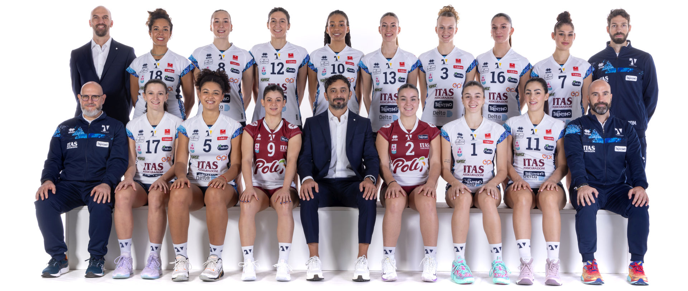

Ciao🙌 e benvenuti nel mio primo sito web. Oggi vi parlerò del Trentino volley femminile❤️ 
Adesso vi parlerò delle giocatrici, dei loro nomi e dei loro ruoli:
Palleggiatrici: Ilaria Batte e Vittoria Prandi🤲
Schiacciatrici: Virginia Ristori Tomberli, Aneta Zojzi, Dominika Giuliani e Dayana Kosareva✋
Libero: Beatrice Zeni e Silvia Fiori🙌
Opposto: Emilia Weske e Maria Teresa Bassi👋
Centrale: Giulia Marconato, Beatrice Molinaro, Greta Iob e Valeria Pizzolato
Nello staff ci sono varie persone per varie esigenze: c'è il primo allenatore, lo scoutman, il preparatore atletico, il fisioterapista e il team manager.✌️
Il primo allenatore è Michele Parusso e lo scoutman si chiama Cataldo di Michele. Invece il preparatore atletico si chiama Alessandro Gelmi, il fisioterapista è Filippo d'Elia e il team manager è Serena Avi.
Facciamo un piccolo approfondimento sui posti in campo.😁 In campo ci sono 6 posti: posto 1, posto 2, posto 3, posto 4, posto 5 e posto 6.
In posto 1 si batte e difende, in posto 2 si difende e attacca, in posto 3 si palleggia, in posto 4 è uguale a posto 2, in posto 5 e 6 si difende.
In realtà possono schiacciare anche quelle in posto 1,5 e 6 ma, se la palleggiatrice gli alza la palla a loro, loro devono schiacciare prima della linea dei tre metri, e se la toccano è punto degli avversari. E se la palleggiatrice non riesce a palleggiare, deve essere pronta per attaccare perché anche la palleggitrice può attaccare, ma solo se quando deve palleggiare la palla non arriva a lei.